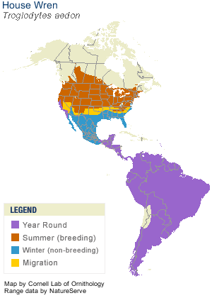

Neat facts
- The House Wren has one of the largest ranges of any songbird in the western world, from Canada to the southernmost point of South America.
- Nests in tree holes or boxes can become infested with mites and other parasites which feed on young nestlings. House Wrens often add spider sacs to their nest that hatch and devour the parasites.
- House Wrens are small but fierce competitors for nest holes. They harass (and occasionally even kill) larger birds, sometimes dragging eggs out of a nest they want.
| Binomial Name | Troglodytes aedon |
|---|---|
| Length | 11-13 cm |
| Wingspan | 15 cm |
| Weight | 10-12 g |
| Habitat | Wide variety of areas with trees, shrubs, tangles, and open areas (e.g. forests, swamps, aspen groves as high as 10,000 ft, buildings, yards, farms, etc.) |
| Food | Spiders, beetles, caterpillars, earwigs, daddy longlegs, flies, leafhoppers, springtails, and snail shells |
| Nest Location | 100 ft from wooded areas, old woodpecker holes, natural crevices, and next boxes |
| Nest Size | Twigs are piled into the cavity they choose along with feathers, grasses, and other small items |
| Egg Description | White, pink-white, or grayish, speckled or blotched with reddish brown |
| Clutch Size | 3-10 eggs |

These wrens are quite small but have a lovely chirp. They have been known to nest in yards near the park.